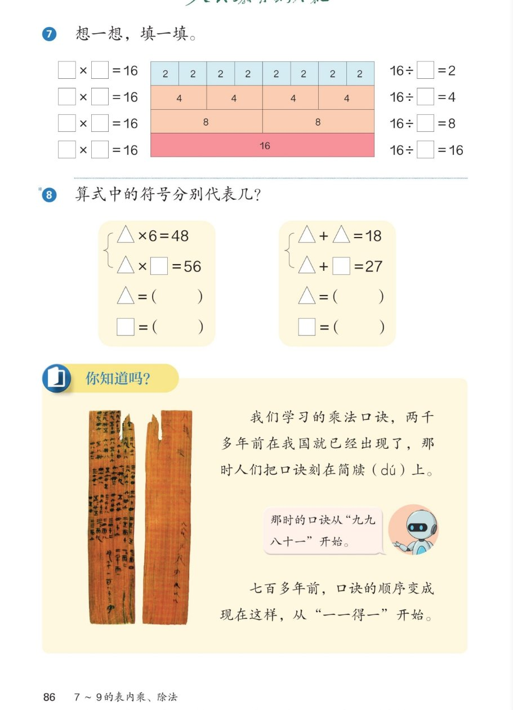

🔊 五、7~9 的表内乘、除法 · 课本第 86 页 · 练一练 7~8 + 你知道吗
人教版《数学》二年级上册 · 有声图文带读 · 先想后看解析 · 16 的平均分色条图 · 符号谜题 · 口诀的历史
题数
6
认知
2
强化
3
拓展
1
本页重点
平均分与除法 · 符号代数启蒙 · 口诀简牍文化
🎧 分两步学：
① 解析教材图片
——纯声音读图，读到哪一块哪一块闪动提示；关键处先倒计时让你思考，再在图片下方给出解析并朗读。
② 分层提问练习
——六道分层题（认知 / 强化 / 拓展），先思考再展开解析、朗读参考答案；这一步不再回到图片。
也可以随时点任意一句话、图上任意一块单独听；点课本文字卡还会展开答案。
教材图片（点块听读，读到哪块哪块闪）

📖 人教版《数学》二年级上册 · 课本第 86 页 · 图片仅供个人学习，版权归人民教育出版社所有
🤔 想一想（点我可跳过）
课本的文字（点句子：听读 + 看答案）
第⑦题
16 的四行平均分
看答案 ▾
8 个 2：2×8=
16
，16÷8=
2
；
4 个 4：4×4=
16
，16÷4=
4
；
2 个 8：8×2=
16
，16÷2=
8
；
1 个 16：1×16=
16
，16÷1=
16
。
第⑧题左
△ 和 □ 各代表几？（左组）
看答案 ▾
△×6=48 → 想六八四十八 → △=
8
；
8×□=56 → 想七八五十六 → □=
7
；
💡 先解出 △，再解 □，一步接一步。
第⑧题右
△ 和 □ 各代表几？（右组）
看答案 ▾
△+△=18 → 2 个 △ 是 18 → △=
9
；
9+□=27 → □=27−9=
18
；
💡 同一个符号，在一组题里代表同一个数。
你知道吗
口诀的历史
看答案 ▾
两千多年前：口诀刻在
简牍（dú）
上；
那时从
九九八十一
开始，所以叫九九歌；
七百多年前：才变成现在从
一一得一
开始的顺序。
分层提问练习（先想后看解析）
🟦
认知
16÷8 等于几？色条图怎么表示？
看解析
🤔 想一想
解析：
16÷8=
2
；
色条图：8 个 2 排成一行。
🔺
认知
△×6=48，△ 是几？
看解析
🤔 想一想
解析：
想：六八四十八；
△=
8
。
🟧
强化
色条是 2 个 8 时，乘法和除法算式怎么写？
看解析
🤔 想一想
解析：
8×2=
16
；
16÷2=
8
：分成 2 份，每份 8。
🧩
强化
右组的 □ 是怎么算出来的？
看解析
🤔 想一想
解析：
先求 △：2 个 △ 是 18 → △=
9
；
再求 □：27−9=
18
。
📜
强化
古时候的乘法口诀从哪一句开始？刻在哪里？
看解析
🤔 想一想
解析：
刻在
简牍
上，从
九九八十一
开始；
所以乘法口诀又叫
九九歌
。
🌈
拓展
乘积是 16 的乘法算式能写出几道？
看解析
🤔 想一想
解析：
1×16、2×8、4×4、8×2、16×1，共
5 道
；
对应除法：16÷1、16÷2、16÷4、16÷8、16÷16；
🌈 一个数能平均分成几份，看它的因数
① 解析教材图片
② 分层提问练习
⏹ 停止
纯声音 + 高亮跟随 · 想好才出解析
← 返回导航